library(phangorn)Loading required package: apemtdna <- read.phyDat('../../data/mtDNA.fasta', format = 'fasta')Aunque existen muy buenos programas para inferir filogenias fuera del entorno de R (es decir, para el terminal de Bash), utilizar las herramientas en R tiene la ventaja de poder representar los árboles, manipularlos y extraer información de ellos con toda la flexibilidad que permite un lenguaje de programación. Otros programas como RAxML o IQtree producirían los resultados en forma de archivos de texto con formato Newick o NEXUS. En R, los árboles serán objetos de clase phylo, que pueden también ser exportados como archivos de texto con formato Newick con la función write.tree() del paquete ape. Este paquete será cargado automáticamente cuando carguemos el paquete phangorn, que proporciona las principales funciones para inferencia filogenética.
Un alineamiento en formato FASTA de 42 cromosomas mitocondriales completos de: un gorila, cuatro chimpancés, cuatro bonobos, un Homo heidelbergensis (de hace unos 400000 años), 4 humanos denisovanos (de hace entre 30000 y 110000 años), 19 humanos neandertales (de hace entre 30000 y 180000 años) y 9 humanos anatómicamente modernos (actuales).
library(phangorn)Loading required package: apemtdna <- read.phyDat('../../data/mtDNA.fasta', format = 'fasta')Después de ejecutar el bloque anterior, habrás cargado los datos en el objeto de clase phyDat llamado mtdna. Puedes usar la consola de R para echarle un vistazo, por ejemplo con la función glance() o incluso para generar una imagen del alineamiento con image(). Si tienes instalado el paquete Biostrings (de Bioconductor), puedes crear un objeto de classe DNAStringSet con as.StringSet(mtDNA), al que se le pueden aplicar muchas otras funciones.
Ejercicio: ¿Puedes confirmar el número de secuencias? ¿Qué longitud tiene el alineamiento? ¿Qué función usarías para extraer los nombres de las secuencias?
glance(mtdna) nseq nchar unique_site_pattern parsimony_informative_sites const_sites
1 42 16603 974 2047 13482names(mtdna) [1] "G.gorilla_D38114" "P.troglodytes_JF727212"
[3] "P.troglodytes_JN191207" "P.troglodytes_JF727168"
[5] "P.troglodytes_HM068590" "P.paniscus_KX211934"
[7] "P.paniscus_KX211928" "P.paniscus_GU189658"
[9] "P.paniscus_GU189664" "H.heidelbergensis_NC_023100"
[11] "H.s.denisova_NC_013993" "H.s.denisova_FR695060"
[13] "H.s.denisova_KX663333" "H.s.denisova_KT780370"
[15] "H.s.neandertal_KX198085" "H.s.neandertal_KX198086"
[17] "H.s.neandertal_MG025538" "H.s.neandertal_NC_011137"
[19] "H.s.neandertal_FM865409" "H.s.neandertal_FM865407"
[21] "H.s.neandertal_KX198088" "H.s.neandertal_KX198083"
[23] "H.s.neandertal_MG025540" "H.s.neandertal_MG025536"
[25] "H.s.neandertal_MG025537" "H.s.neandertal_KX198087"
[27] "H.s.neandertal_KX198082" "H.s.neandertal_FM865408"
[29] "H.s.neandertal_KU131206" "H.s.neandertal_KF982693"
[31] "H.s.neandertal_FM865411" "H.s.neandertal_KY751400"
[33] "H.s.neandertal_MK033602" "H.s.modern_EU092846"
[35] "H.s.modern_EU092665" "H.s.modern_JQ045086"
[37] "H.s.modern_DQ779927" "H.s.modern_DQ779932"
[39] "H.s.modern_AP008640" "H.s.modern_AY495317"
[41] "H.s.modern_J01415" "H.s.modern_FJ236981" Según la columna nseq, hay 42 secuencias. Atendiendo al número de caracteres, el alineamiento tendría una longitud de 16603 bases. Para extraer el nombre de las secuencias podemos usar la función names().
Los árboles NJ y UPGMA pueden proporcionar una idea rápida de cómo podría ser la relación filogenética entre las secuencias. Como métodos basados en distancias que son, necesitamos calcular primero las distancias. Podemos hacerlo en el mismo paso en el que generamos el árbol: nj(dist.ml(mtdna)). O bien, podemos hacerlo en dos pasos: guardar la matriz de distancias en un objeto de clase dist, y después generar los árboles.
La función dist.ml() (de phangorn) solo ofrece un par de modelos de evolución de nucleótidos para estimar distancias: F81 y JC69 (ofrece 17 modelos para proteínas). La función dist.dna() de ape (que no se aplica sobre objetos phyDat, sino DNAbin) ofrece algunas opciones más. Pero en el fondo, los métodos NJ y UPGMA son sólo heurísticos rápidos, con los que no hace falta usar distancias de alta precisión.
distancias <- dist.ml(mtdna, model = 'F81')
mt_nj <- NJ(distancias)
mt_upgma <- upgma(distancias)Ejercicio ·¿De qué clase son los objetos mt_nj y mt_upgma?
class(mt_nj)[1] "phylo"class(mt_upgma)[1] "phylo"Son de clase phylo ·Consulta la estructura de estos objetos (str(mt_nj)).
str(mt_nj)List of 4
$ edge : int [1:81, 1:2] 47 47 54 54 53 53 52 52 51 51 ...
$ edge.length: num [1:81] 6.03e-05 5.20e-08 -4.37e-08 4.37e-08 8.51e-08 ...
$ tip.label : chr [1:42] "G.gorilla_D38114" "P.troglodytes_JF727212" "P.troglodytes_JN191207" "P.troglodytes_JF727168" ...
$ Nnode : int 40
- attr(*, "class")= chr "phylo"
- attr(*, "order")= chr "postorder"str(mt_upgma)List of 4
$ edge : int [1:82, 1:2] 63 63 49 49 48 48 59 59 55 55 ...
$ edge.length: num [1:82] 0.00127 0.00127 0.001422 0.000151 0.011063 ...
$ tip.label : chr [1:42] "G.gorilla_D38114" "P.troglodytes_JF727212" "P.troglodytes_JN191207" "P.troglodytes_JF727168" ...
$ Nnode : int 41
- attr(*, "class")= chr "phylo"
- attr(*, "order")= chr "postorder"·Represéntalos gráficamente (plot(mt_nj)) y consulta la ayuda de la función.
plot(mt_nj)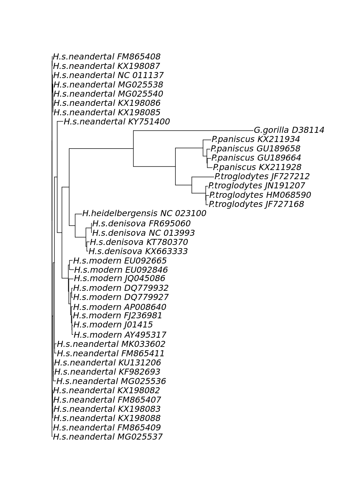
plot(mt_upgma)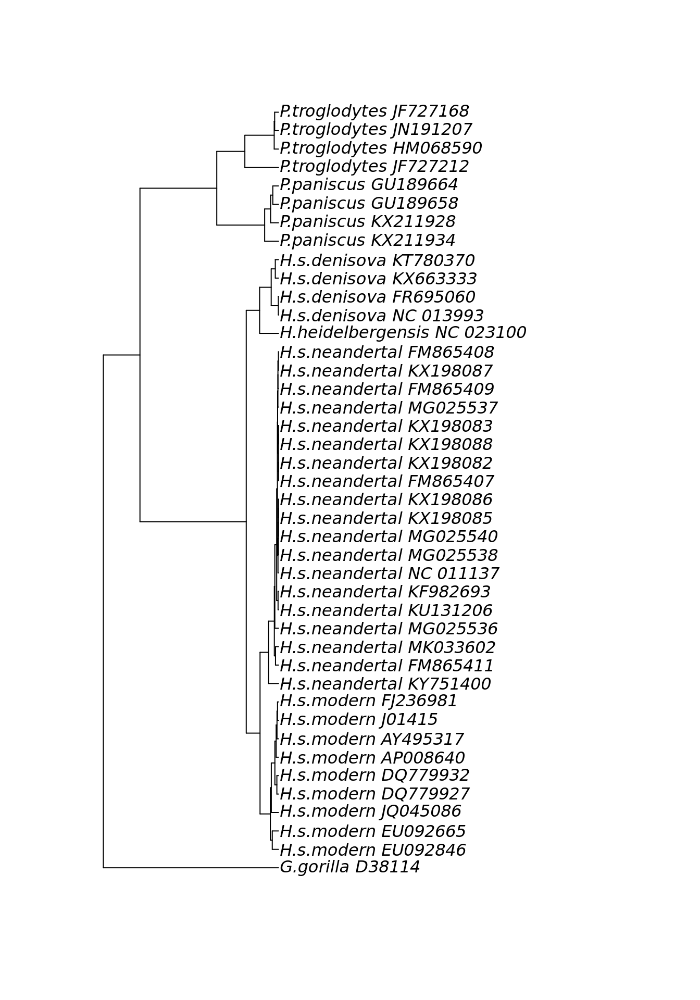
·plot.phylo() para saber qué opciones de representación gráfica tienes. plot(x, type = “phylogram”, use.edge.length = TRUE, node.pos = NULL, show.tip.label = TRUE, show.node.label = FALSE, edge.color = NULL, edge.width = NULL, edge.lty = NULL, node.color = NULL, node.width = NULL, node.lty = NULL, font = 3, cex = par(“cex”), adj = NULL, srt = 0, no.margin = FALSE, root.edge = FALSE, label.offset = 0, underscore = FALSE, x.lim = NULL, y.lim = NULL, direction = “rightwards”, lab4ut = NULL, tip.color = par(“col”), plot = TRUE, rotate.tree = 0, open.angle = 0, node.depth = 1, align.tip.label = FALSE, …)
·¿Para qué sirven las funciones add.scale.bar() y axisPhylo()? add.scale.bar() This function adds a horizontal bar giving the scale of the branch lengths to a plot of a phylogenetic tree on the current graphical device. axisPhylo() This function adds a scaled axis on the side of a phylogeny plot.
El árbol mt_nj no está enraizado (puedes comprobarlo con is.rooted()). Tenemos un par de opciones para enraizarlo. Una opción es root(), función en la que debemos especificar o bien el outgroup o bien el nodo interno en el que queremos situar la raíz. Para saber cómo identificar los nodos internos, puedes invocar nodelabels() después de haber usado plot(mt_nj). Por ejemplo, en mi caso, el nodo 75 parece ser el ancestro entre gorilas y chimpancés, y por tanto también es ancestro de los humanos. Por tanto:
mt_nj_rooted <- root(mt_nj, node = 75)
plot (mt_nj_rooted)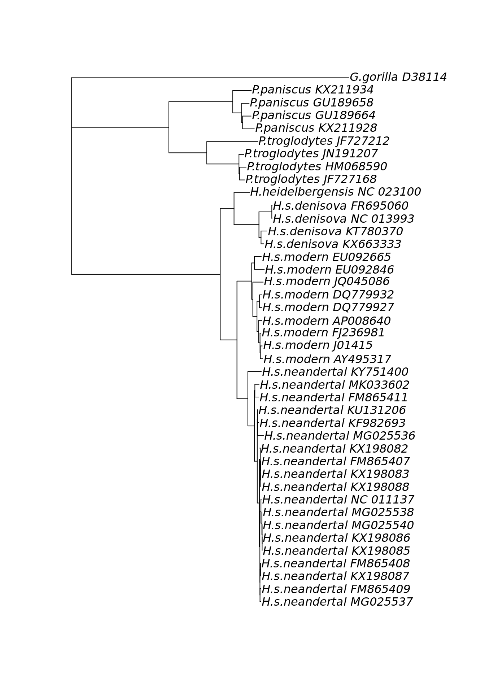
La numeración de los nodos internos siempre sigue a la de las hojas (o puntas) del árbol. El orden es caprichoso y después de enraizar, lo que era el 75 en mt_nj ahora será el 43 en mt_nj_rooted. Para garantizar que el enraizado no depende de la numeración, es más seguro usar el nombre del outgroup:
# Debería dar el mismo resultado:
mt_nj_rooted2 <- root(mt_nj, outgroup = 'G.gorilla_D38114')
plot(mt_nj_rooted2)
Al representar el árbol enraizado (plot(mt_nj_rooted)) verás que no todas las hojas del árbol están a la misma altura. El punto exacto en el que se sitúa la raíz en una rama es arbitrario y root() no se esfuerza mucho en intentar que el árbol parezca ultramétrico. La otra opción es la función midpoint(), que escoge la posición de la raíz para que el árbol esté más equilibrado:
# Esto sobreescribe el objeto anterior:
mt_nj_rooted3 <- midpoint(mt_nj)
plot(mt_nj_rooted3, align.tip.label = TRUE, main = 'NJ, enraizado en punto medio')
nodelabels(frame = 'none')
add.scale.bar()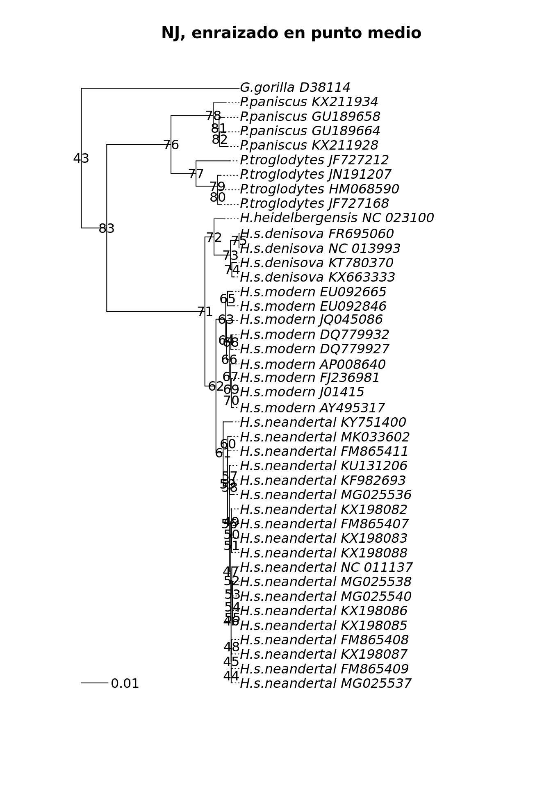
El enraizado en punto medio asume que todas las hojas son contemporáneas, como sucede en muchos casos. Pero, en nuestros datos tenemos secuencias contemporáneas y también arcaicas. En el apéndice encontrarás referencias sobre las edades estimadas de esas secuencias. Conociendo estas edades, podemos aplicar un método de enraizado llamado root-to-tip regression, mediante la función rtt() de ape.
Lo primero es crear un vector de fechas (o edades) para todas las hojas del árbol. Podemos expressar las edades de las secuencias arcaicas como el número (negativo) de años que hace que dejaron de evolucionar. Para saber el orden en que debemos especificar las edades, podemos usar mt_nj$tip.label.
fechas <- c(0, 0, 0, 0, 0, 0, 0, 0, 0,
-400000,
-39000, -50000, -110000, -110000,
-39820, -40096, -38515, -38310, -39000, -40000, -41210,
-42430, -42540, -43230, -43780, -44290, -44770, -49000,
-50000, -82752, -65000, -122287, -110450,
0, 0, 0, 0, 0, 0, 0, 0, 0)
# Observa que hay que asignar el resultado de setNames() a "fechas"
fechas <- setNames(fechas, mt_nj$tip.label)
fechas G.gorilla_D38114 P.troglodytes_JF727212
0 0
P.troglodytes_JN191207 P.troglodytes_JF727168
0 0
P.troglodytes_HM068590 P.paniscus_KX211934
0 0
P.paniscus_KX211928 P.paniscus_GU189658
0 0
P.paniscus_GU189664 H.heidelbergensis_NC_023100
0 -400000
H.s.denisova_NC_013993 H.s.denisova_FR695060
-39000 -50000
H.s.denisova_KX663333 H.s.denisova_KT780370
-110000 -110000
H.s.neandertal_KX198085 H.s.neandertal_KX198086
-39820 -40096
H.s.neandertal_MG025538 H.s.neandertal_NC_011137
-38515 -38310
H.s.neandertal_FM865409 H.s.neandertal_FM865407
-39000 -40000
H.s.neandertal_KX198088 H.s.neandertal_KX198083
-41210 -42430
H.s.neandertal_MG025540 H.s.neandertal_MG025536
-42540 -43230
H.s.neandertal_MG025537 H.s.neandertal_KX198087
-43780 -44290
H.s.neandertal_KX198082 H.s.neandertal_FM865408
-44770 -49000
H.s.neandertal_KU131206 H.s.neandertal_KF982693
-50000 -82752
H.s.neandertal_FM865411 H.s.neandertal_KY751400
-65000 -122287
H.s.neandertal_MK033602 H.s.modern_EU092846
-110450 0
H.s.modern_EU092665 H.s.modern_JQ045086
0 0
H.s.modern_DQ779927 H.s.modern_DQ779932
0 0
H.s.modern_AP008640 H.s.modern_AY495317
0 0
H.s.modern_J01415 H.s.modern_FJ236981
0 0 A continuación se escoge la posición de la raíz que optimiza la regresión entre distancia de raíz a puntas y edades de las puntas.
mt_nj_rtt <- rtt(mt_nj, tip.dates = fechas, objective = 'rms')
#rtt=Root a Tree by Root-to-Tip Regression, this function roots a phylogenetic tree with dated tips in the location most compatible with the assumption of a strict molecular clock.
plot(mt_nj_rtt)
add.scale.bar()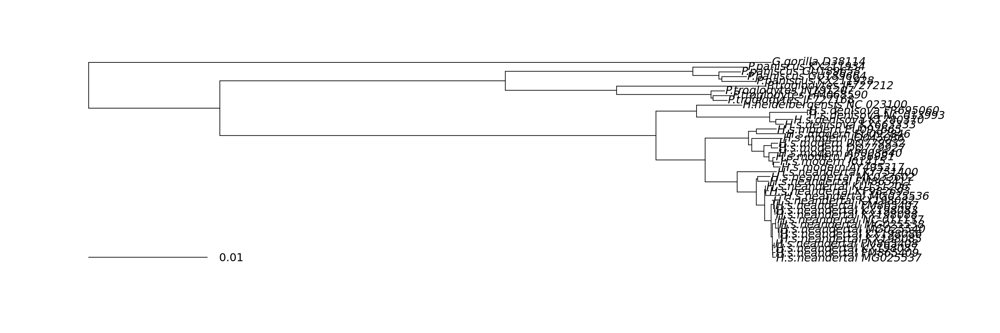
Ejercicio ·¿Se corresponden bien las distancias evolutivas estimadas con las dataciones? Al hacer este árbol, nos representa algunas especies actuales por detrás de otras actuales, en especial los denisovanos, que parecen muy adelantados en este árbol. ·¿Qué secuencias crees que se ajustan menos a su supuesta edad? La de los denisovanos es la que más se parece desviar de su supuesta datación. ·¿Qué razones puede haber para que la edad de una secuencia no se corresponda con la cantidad de cambios que ha acumulado? Es posible que la datación de estos individuos no sea precisa, suponiendo que sean más antiguas de lo que realmente son. Otra posibilidad es que estas secuencias podrían contener cambios que no son realmente mutaciones ancestrales, sino productos de la degradación del ADN desde la deposición del fósil hasta su secuenciación. Hay métodos estadísticos para corregir estos en teoría, pero parece que los denisovanos han acumulado más mutaciones que las secuencias actuales, por lo que estas podrían ser mutaciones debidas a la degradación del ADN.
Si has creado el objeto distancias antes, puedes usarlo para conocer la cantidad estimada de cambios entre los cromosomas mitocondriales humanos y de neandertales, por ejemplo. El objeto de clase dist es incómodo, pero podemos obtener una simple matriz fácilmente:
distMat <- as.matrix(distancias)Aprovechando que los nombres de las secuencias tienen una estructura coherente, podemos usar startsWith() para seleccionar a los humanos modernos o a los neandertales, etc.:
# Esto son vectores lógicos que podemos usar después para seleccionar filas
# y columnas de la matriz de distancias.
modernos <- startsWith(colnames(distMat), 'H.s.modern')
neandertales <- startsWith(colnames(distMat), 'H.s.neandertal')
denisovanos <- startsWith(colnames(distMat), 'H.s.denisova')
chimpances <- startsWith(colnames(distMat), 'P.troglodytes')
bonobos <- startsWith(colnames(distMat), 'P.paniscus')La distancia estimada media entre humanos y neandertales se puede obtener como:
mean(distMat[modernos, neandertales])[1] 0.01214282Ejercicio ·Calcula las distancias medias entre todos los grupos.
mean(distMat[modernos, denisovanos])[1] 0.02250501mean(distMat[modernos, chimpances])[1] 0.09104153mean(distMat[modernos, bonobos])[1] 0.09239182mean(distMat[neandertales, denisovanos])[1] 0.02201398mean(distMat[neandertales, chimpances])[1] 0.09041225mean(distMat[neandertales, bonobos])[1] 0.09089352mean(distMat[denisovanos, chimpances])[1] 0.09129525mean(distMat[denisovanos, bonobos])[1] 0.09297814mean(distMat[chimpances, bonobos])[1] 0.04059035·¿Cuántas veces mayor es la distancia entre humanos y chimpancés que entre humanos y neandertales?
mean(distMat[modernos, chimpances])/mean(distMat[modernos, neandertales])[1] 7.497561·¿Cómo calcularías la distancia media entre dos secuencias de humanos modernos?
# La submatriz siguiente contiene ceros en la diagonal. Si queremos excluir
# del cálculo de la media las distancias entre cada secuencia consigo misma,
# habrá que tenerlo en cuenta:
z <- distMat[modernos, modernos]
z[z == 0] <- NA
mean(z, na.rm = TRUE)[1] 0.003747961Las distancias estimadas no son exactas. Cuanto mayor es la distancia, mayor es el error en la estimación. Además el modelo disponible podia no ser el adecuado. Pero nos ayudan a estimar el tiempo transcurrido desde que dos linajes se separaron, si asumimos el reloj molecular. Por ejemplo, estas distancias sugieren que los humanos modernos divergieron de los neandertales hace una cantidad de tiempo aproximadamente igual al 13.3% del tiempo que nos separa de los chimpancés, que podrían ser más de 850000 años si del chimpancé nos separan 6.5 millones de años.
En los árboles las distancias se representan mediante la suma de las longitudes que separan las hojas. Las podemos obtener con la función cophenetic():
distCofen <- cophenetic(mt_nj_rooted)Ejercicio ¿Cuánto se parecen las distancias estimadas a las distancias cofenéticas?
# Aquí usamos las matricees como vectores:
plot(distMat, distCofen, xlab = 'Distancias F81', ylab = 'Dist. cofenéticas')
abline(a = 0, b = 1, col = 'red', lty = 2)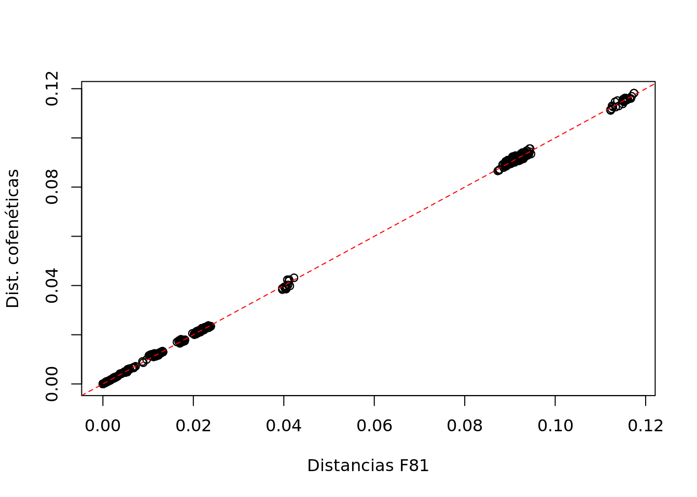
Como los datos se mantienen muy próximos a la diagonal, podemos considerar que las distancias cofenéticas y las estimadas son bastante similares.
Las distancias crudas, como número de diferencias, nos pueden informar de la presencia de pares de secuencias idénticas. Podríamos dejarlas, pero algunos de los métodos que usaremos a continuación pueden generar errores, por ejemplo cuando dos secuencias idénticas se supone que pertenecen a épocas diferentes.
crudas <- dist.dna(as.DNAbin(mtdna), model = 'raw')
crudas <- as.matrix(crudas)
identicas <- which(crudas == 0 & lower.tri(crudas), arr.ind = TRUE)
# posiciones de la semimatriz inferior donde las distancias son 0:
identicas row col
H.s.neandertal_KX198086 16 15
H.s.neandertal_MG025540 23 15
H.s.neandertal_MG025540 23 16
H.s.neandertal_KX198088 21 20
H.s.neandertal_KX198083 22 20
H.s.neandertal_KX198082 27 20
H.s.neandertal_KX198083 22 21
H.s.neandertal_KX198082 27 21
H.s.neandertal_KX198082 27 22repetidas <- unique(c(identicas[, 'row'], identicas[, 'col']))
heatmap(crudas[repetidas, repetidas], cexRow = 0.7, cexCol = 0.7)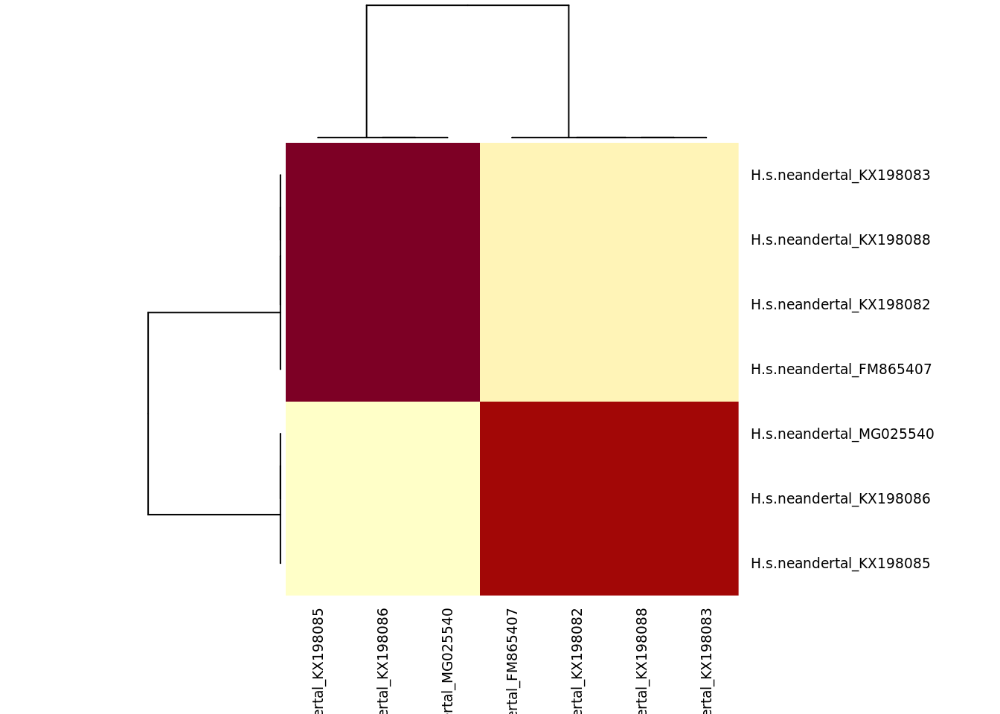
Así pues, las secuencias de Neandertales KX198085, KX198086 y MG025540 (todas ellas con una edad estimada de unos 40000 años) son idénticas entre ellas; y las secuencias, también Neandertales FM865407, KX198082, KX198088 y KX198083 son idénticas entre ellas. Bueno, en realidad, la comparación ignora las posiciones en las que una secuencia contiene ambigüedades (Ns). Dejaremos sólo una de cada grupo: MG025540 y FM865407, que son las que menos ambigüedades tienen en la secuencia. Como no conocemos una función que elimine secuencias de un objeto phyDat, necesitamos especificar aquellas con las que nos queremos quedar. Podríamos usar la función subset() o bien la función [, tal como la aplicaríamos a una matriz. También existe una función unique(), pero si la usamos perdemos control sobre qué representantes conservamos de cada grupo de secuencias idénticas.
# La exclamación ("!") invierte el valor lógico de lo que la sigue.
# La función "grepl()" produce un vector lógico con "TRUE" donde los nombres
# de las secuencias contienen alguna de esas palabras.
mtdna37 <- mtdna[! grepl('(KX198085|KX198086|KX198082|KX198088|KX198083)',
names(mtdna)), ]
mtdna3737 sequences with 16603 character and 974 different site patterns.
The states are a c g t Ejercicio ¿Serías capaz de crear otro conjunto de datos, mtdna28, que sólo contenga secuencias del género Homo?
mtdna28 <- mtdna37[grepl('^H.', names(mtdna37)), ]
mtdna2828 sequences with 16603 character and 974 different site patterns.
The states are a c g t Por otra parte, la secuencia del gorila no nos hace falta: es demasiado divergente y puede haber evolucionado a un ritmo diferente.
mtdna36 <- mtdna37[! startsWith(names(mtdna37), 'G.gorilla'),]Las secuencias mitocondriales proporcionan suficiente información para determinar con confianza la topología del árbol que relaciona los grupos principales. Sólo algunas regiones de árbol, como la relación exacta entre los miembros de un mismo grupo, presentan dificultad. Para estimar mejor la topología y las longitudes de las ramas, debemos usar el método de máxima verosimilitud, para el cual sí es fundamental escoger el modelo evolutivo más adecuado. Para ello usamos la funcion modelTest(), que devuelve un objeto de clase modelTest, que también puede usarse como un simple marco de datos.
modelos <- modelTest(mtdna36, control = pml.control(trace = 0))
head(modelos) Model df logLik AIC AICw AICc AICcw BIC
1 JC 69 -43393.51 86925.02 0 86925.60 0 87457.51
2 JC+I 70 -42830.37 85800.74 0 85801.35 0 86340.96
3 JC+G(4) 70 -42826.86 85793.72 0 85794.32 0 86333.93
4 JC+G(4)+I 71 -42806.58 85755.15 0 85755.77 0 86303.08
5 F81 72 -42566.50 85277.01 0 85277.64 0 85832.66
6 F81+I 73 -41986.64 84119.29 0 84119.94 0 84682.65Lo que hace modelTest() es calcular la verosimilitud de cada modelo sobre un mismo árbol. Al hacerlo, debe optimizar los parámetros de cada modelo, pero no optimiza el árbol. Sería una pérdida de tiempo no guardar los parámetros optimizados, que son un excelente punto de partida para la búsqueda del árbol más verosímil. Podemos extraer cualquiera de los modelos comparados con la función as.pml():
fit <- as.pml(modelos, 'GTR+G(4)+I')
fitmodel: GTR+G(4)+I
loglikelihood: -39274.08
unconstrained loglikelihood: -45918.42
Proportion of invariant sites: 0.6588691
Model of rate heterogeneity: Discrete gamma model
Number of rate categories: 4
Shape parameter: 0.9844976
Rate Proportion
1 0.0000000 0.65886906
2 0.3923724 0.08528274
3 1.3837563 0.08528274
4 2.9237543 0.08528274
5 7.0258196 0.08528274
Rate matrix:
a c g t
a 0.000000 1.9690280 62.9047927 1.21325
c 1.969028 0.0000000 0.6641342 46.73646
g 62.904793 0.6641342 0.0000000 1.00000
t 1.213250 46.7364572 1.0000000 0.00000
Base frequencies:
a c g t
0.3094827 0.3112863 0.1305929 0.2486381 Aquí se demuestra que modelos no es un simple marco de datos, sino que tiene escondida mucha información, incluyendo de hecho el árbol y el alineamiento.
También podemos usar as.pml() para extraer el modelo más adecuado a los datos según alguno de los criterios disponibles (BIC, AIC, AICc). El motivo por el que el modelo más adecuado no es necesariamente el más verosímil es que la verosimilitud siempre será mayor para un modelo más complejo (con más parámetros), porque tiene más grados de libertad para ajustarse a los datos. Los criterios de selección penalizan los modelos con más parámetros para hacer la comparación más justa. El peligro de usar un modelo con demasiados parámetros es el de sobreajustar el modelo, es decir, tomar el ruído natural de los datos como algo que el modelo también debe explicar.
fit <- as.pml(modelos, 'BIC')
fitmodel: TIM2+G(4)+I
loglikelihood: -39277.23
unconstrained loglikelihood: -45918.42
Proportion of invariant sites: 0.6583856
Model of rate heterogeneity: Discrete gamma model
Number of rate categories: 4
Shape parameter: 0.9826665
Rate Proportion
1 0.0000000 0.65838563
2 0.3907402 0.08540359
3 1.3801501 0.08540359
4 2.9186930 0.08540359
5 7.0195260 0.08540359
Rate matrix:
a c g t
a 0.000000 2.028462 77.78376 2.028462
c 2.028462 0.000000 1.00000 57.869998
g 77.783760 1.000000 0.00000 1.000000
t 2.028462 57.869998 1.00000 0.000000
Base frequencies:
a c g t
0.3094827 0.3112863 0.1305929 0.2486381 Ejercicio ¿Cuál es el mejor modelo para secuencias sólo del género Homo?
La fila model: TIM2+G(4)+I muestra el mejor modelo.
Una vez hemos seleccionado el modelo, podemos optimizar la topología del árbol, sus longitudes de ramas, y también los demás parámetros del modelo. Para ello, usaremos la función pml_bb(), que internamente usa las funciones pml() y optim.pml(). Podemos modular el comportamiento de pml_bb() (cuánta información muestra del proceso, cuántas iteraciones usa, cuándo decide que no puede mejorar el modelo…) con los parámetros definidos mediante pml.control(). A la función pml_bb() podemos proporcionarle el alineamiento (objeto de clase phyDat) y el nombre del modelo de evolución molecular, o bien un objeto de clase modelTest, de donde toma automáticamente el alineamiento y el modelo con un valor de BIC (Bayesian Information Criterion) más bajo.
mt_ml <- pml_bb(modelos,
ratchet.par = ratchet.control(iter = 5L, maxit = 10L), #Para incluir un máximo de iteraciones
control = pml.control(trace = 0))El objeto mt_ml, de clase pml, contiene el árbol (mt_ml$tree), además de los parámetros optimizados del modelo. Antes de ver el árbol, echémosle un vistazo al modelo ajustado, para ver cuánto se aparta del que habíamos ajustado con modelTest().
mt_mlmodel: TIM2+G(4)+I
loglikelihood: -39277.23
unconstrained loglikelihood: -45918.42
Proportion of invariant sites: 0.6581093
Model of rate heterogeneity: Discrete gamma model
Number of rate categories: 4
Shape parameter: 0.9807758
Rate Proportion
1 0.0000000 0.65810928
2 0.3893124 0.08547268
3 1.3773298 0.08547268
4 2.9153764 0.08547268
5 7.0176263 0.08547268
Rate matrix:
a c g t
a 0.000000 2.028568 77.76397 2.028568
c 2.028568 0.000000 1.00000 57.868714
g 77.763971 1.000000 0.00000 1.000000
t 2.028568 57.868714 1.00000 0.000000
Base frequencies:
a c g t
0.3094827 0.3112863 0.1305929 0.2486381 Por defecto, pml_bb() usa un método de reordenación del árbol denominado “stochastic”, genera un árbol no enraizado y 1000 pseudo-réplicas de bootstrap. Al pedirle la representación gráfica, añade automáticamente los valores de soporte de bootstrap y lo enraiza en el punto medio:
plot(mt_ml, align.tip.label = TRUE, main = 'Árbol más verosímil')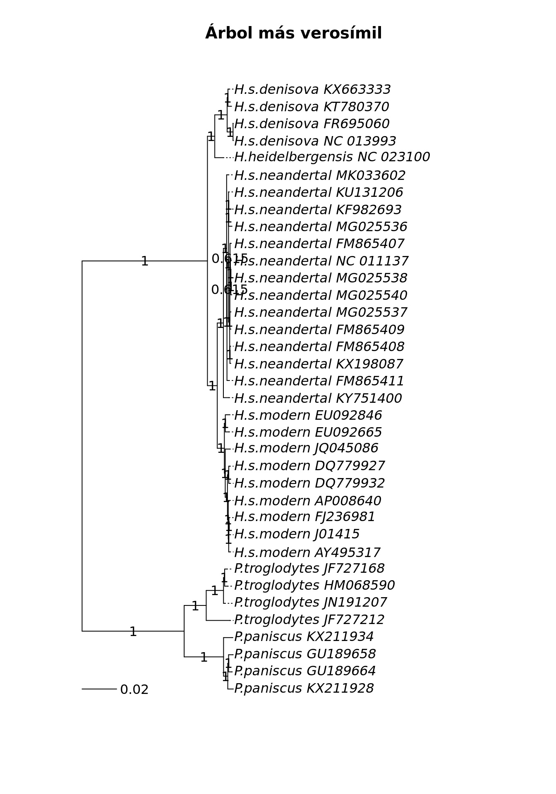
Ejercicio ·El árbol no está enraizado. Como las secuencias no son todas de la misma época, utiliza rtt() para situar la raíz en el punto más compatible con la hipótesis de reloj molecular.
fechas36 <- fechas[names(mtdna36)]
mt_ml_rtt <- rtt(mt_ml$tree, tip.dates = fechas36, objective = 'rms')
plot(mt_ml_rtt, align.tip.label = TRUE)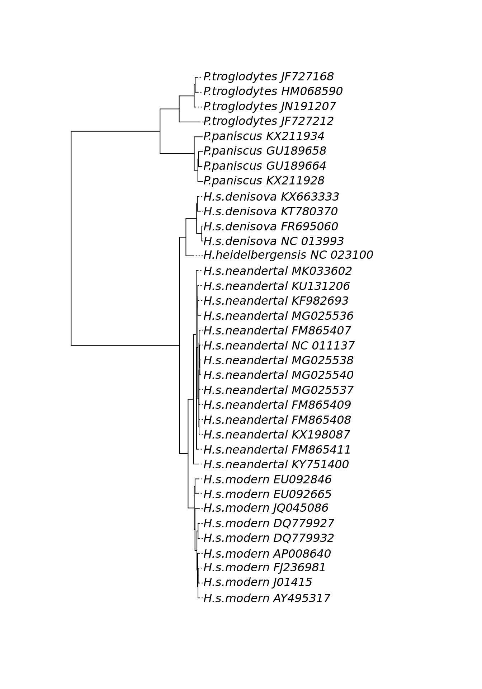
·¿Podrías obtener el árbol más verosímil para el subconjunto de secuencias del género Homo?
#Teníamos creado ya el subconjunto de los datos del género Homo en mtdna28
modelosHomo <- modelTest(mtdna28, control = pml.control(trace = 0))
mt_ml_homo <- pml_bb(modelosHomo,
ratchet.par = ratchet.control(iter = 5L, maxit = 10L),
control = pml.control(trace = 0))
plot(mt_ml_homo, align.tip.label = TRUE, main = 'Árbol más verosímil del género Homo')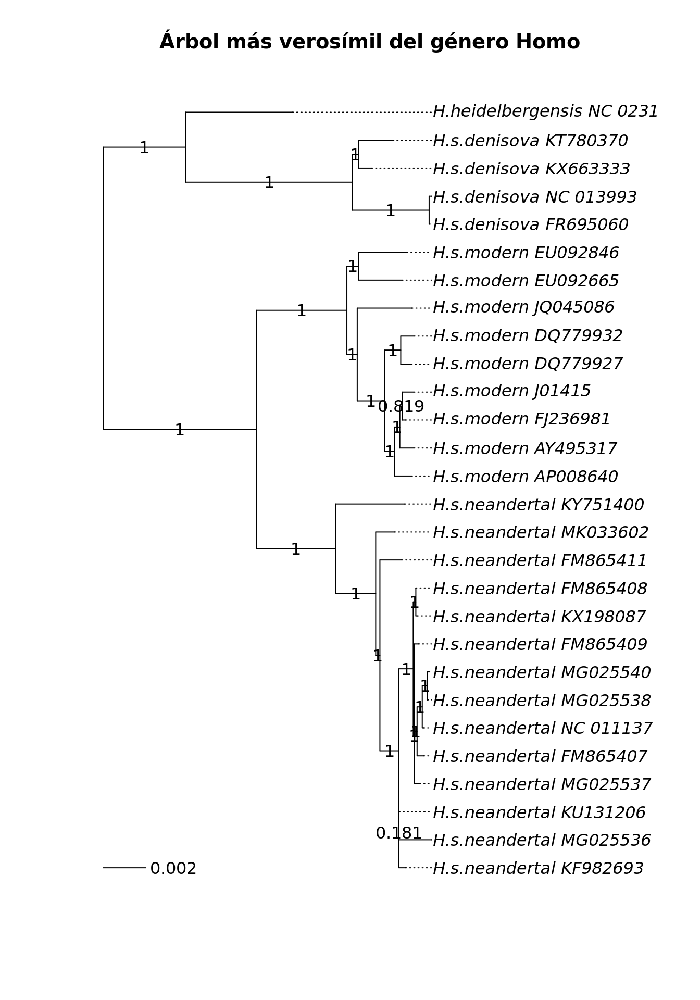
El método de máxima verosimilitud genera árboles no enraizados por defecto, como consecuencia de la reversibilidad temporal. En esos árboles las longitudes de ramas són el número esperado de sustituciones por sitio, sin ninguna referencia explícita al tiempo. Pero cuando no todas las secuencias son isócronas, podemos usar la información de sus edades para constreñir la búsqueda del árbol más verosímil. Al usar las edades de las secuencias, estamos asumiendo un reloj molecular: una relación constante entre el tiempo y el número esperado de sustituciones acumuladas. Entonces, la posición de la raíz afecta la verosimilitud y el resultado es un árbol enraizado.
# Habíamos creado el vector "fechas", pero incluye al gorila.
fechas36 <- fechas[names(mtdna36)]
mt_ml_clock <- pml_bb(modelos,
method = 'tipdated',
tip.dates = fechas36, rearrangement = 'NNI',
control = pml.control(trace = 0))
mt_ml_clockmodel: TIM2+G(4)+I
loglikelihood: -41234.1
unconstrained loglikelihood: -45918.42
Proportion of invariant sites: 0.7647939
Model of rate heterogeneity: Discrete gamma model
Number of rate categories: 4
Shape parameter: 1.094108
Rate Proportion
1 0.000000e+00 0.76479392
2 7.651644e-09 0.05880152
3 2.479231e-08 0.05880152
4 4.994711e-08 0.05880152
5 1.146396e-07 0.05880152
Rate: 1.15857e-08
Rate matrix:
a c g t
a 0.000000 2.318919 57.89027 2.318919
c 2.318919 0.000000 1.00000 47.946785
g 57.890272 1.000000 0.00000 1.000000
t 2.318919 47.946785 1.00000 0.000000
Base frequencies:
a c g t
0.3094827 0.3112863 0.1305929 0.2486381
Rate: 1.15857e-08 plot(mt_ml_clock, align.tip.label = TRUE)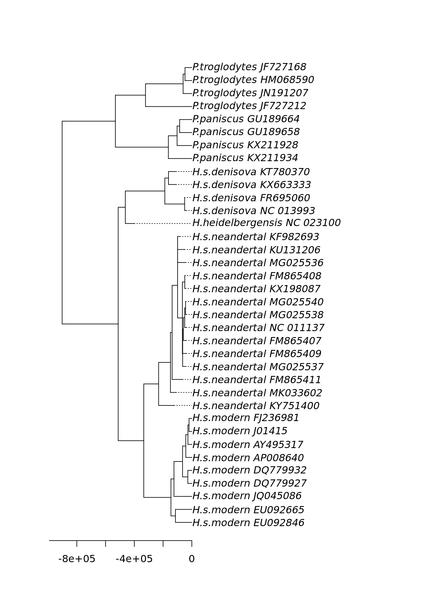
Ejercicio ¿Cuál es la tasa de mutación global estimada? Rate: 1.15857e-08 ¿En qué unidades está expresada? Por lo general, sustituciones por nucleótido por año. ¿Cuánto tiempo dice el árbol que divergimos de los chimpancés? (Puedes usar la función cophenetic(), puesto que en el árbol datado las longitudes de las ramas están en años).
Cofeneticas <- cophenetic(mt_ml_clock$tree)
modernos2 <- startsWith(colnames(Cofeneticas), 'H.s.modern')
chimpances2 <- startsWith(colnames(Cofeneticas), 'P.troglodytes')
mean(distMat[modernos2, chimpances2])[1] 0.05325294Las edades de las secuencias aportan información sobre el reloj molecular en la medida en que se echen de menos las mutaciones que dejaron de acumularse en las secuencias arcaicas. Esta información puede ser muy útil en filogenias de virus de ARN muestreados a lo largo de los años. Pero en una filogenia de millones de años, la poca información de las puntas no es suficiente para datar con exactitud las divergencias antiguas. Hay otras estrategias. Podríamos fijar una tasa de mutación conocida y estimar sólo los otros parámetros. Alternativamente, podemos dar la fecha de algún nodo interno para ayudar a calibrar el reloj. Por ejemplo, supondremos que el ancestro común más reciente entre humanos y chimpancés vivió hace 6.5 millones de años.
Esta información se la proporcionamos a la función estimate.dates() mediante un vector de fechas o edades de las secuencias que incluya no sólo las hojas del árbol sino también los nodos internos, o al menos aquellos de los que conocemos la edad. El vector debe tener tantos componentes como nodos internos y hojas tiene el árbol, con valores NA en las edades desconocidas. Para saber en qué orden están numerados los nodos, podemos ejecutar lo siguiente:
mt_ml_rtt2 <- rtt(mt_ml$tree, fechas36)
plot(mt_ml_rtt2, align.tip.label = TRUE)
nodelabels()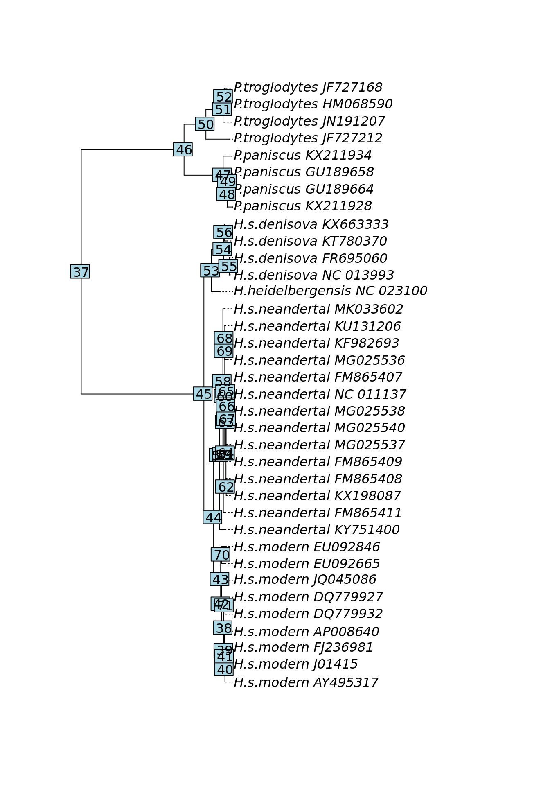
Como suele suceder, la raíz (en los árboles enraizados) es el nodo que sigue a las hojas, es decir el 37, porque los 36 primeros números son las puntas.
fechasNodos <- c(fechas36, -6500000, rep(NA, 34))
fechasEstimadas <- estimate.dates(mt_ml_rtt2, fechasNodos)
tasaEstimada <- estimate.mu(mt_ml_rtt2, fechasNodos)
# Creamos una copia del árbol...
mt_ml_años <- mt_ml_rtt2
# ...y actualizamos las longitudes de sus ramas como la resta
# entre las fechas de los nodos que conectan:
mt_ml_años$edge.length <- fechasEstimadas[mt_ml_años$edge[,2]] -
fechasEstimadas[mt_ml_años$edge[,1]]
plot(mt_ml_años)
axisPhylo()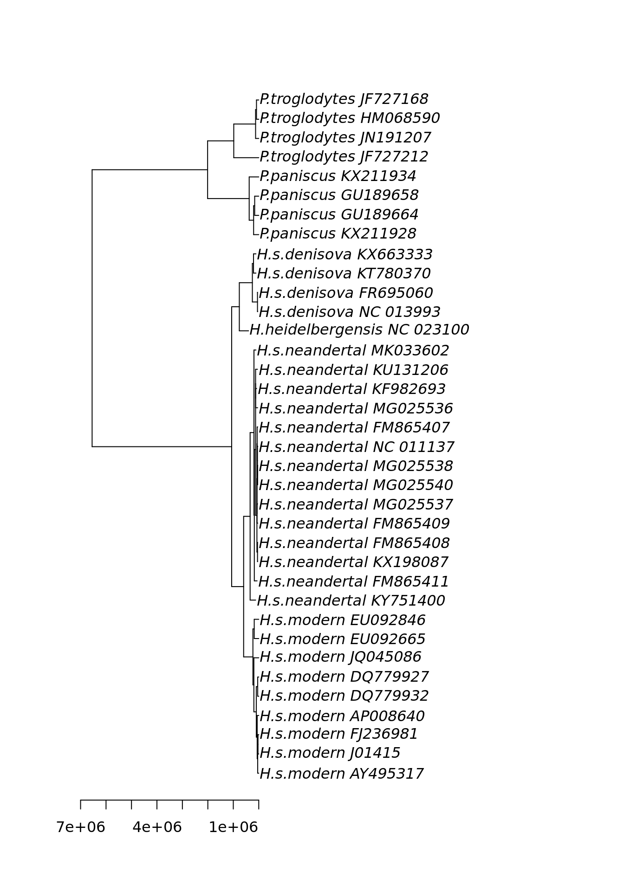
tasaEstimada[1] 1.314284e-08Al forzar que la raíz esté a unos 6.5 millones de años, la tasa de mutación estimada disminuye. Es habitual que las tasas parezcan diferentes a diferentes profundidades del árbol, o entre linajes diferentes.